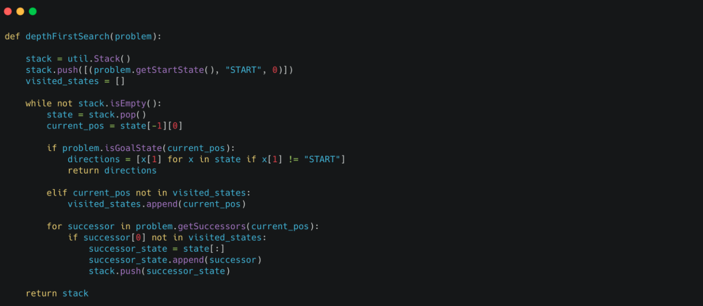
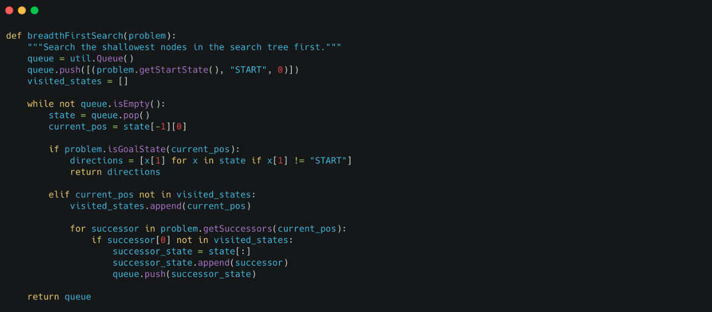
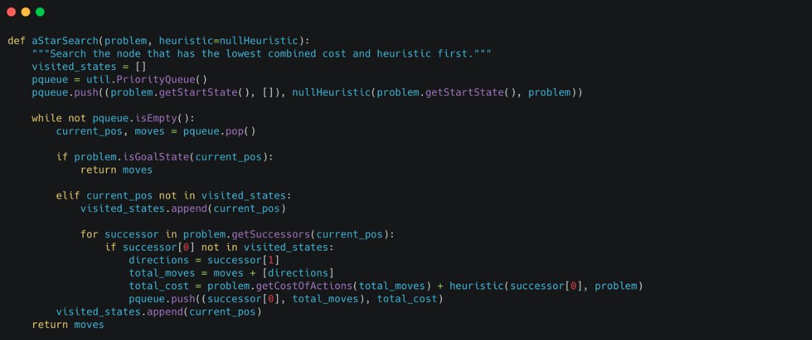

The Pac-Man Project
AI Search Reinforcement Learning
Jun 17, 2019
This project was a core part of how I learned foundational AI concepts during my time in academia. It was not simply about programming a game, but about understanding how classical AI algorithms behave in practice.
By implementing informed search, probabilistic reasoning, and reinforcement learning strategies, I could directly observe how algorithmic choices influenced Pac-Man’s behavior inside the maze.
The visual nature of the project made the learning process more intuitive, allowing me to focus on problem-solving rather than low-level technical details. The complexity of the Pac-Man environment closely mirrors real-world AI challenges.
Getting Started
Download the project and run it locally to explore the behaviors firsthand.
Click the link for: The Pacman code repository
Execution instructions
After downloading and unzipping the Pac-Man project, navigate to the directory and start the game by running the following command:
python pacman.py
Pac-Man navigates a maze of corridors and food pellets. The simplest agent, GoWestAgent, always moves west and serves as a baseline reflex agent.
If Pac-Man gets stuck, exit the game using CTRL+C.
Search Algorithm Implementation
The file searchAgents.py contains a fully implemented SearchAgent that plans and executes paths through the maze.
Each search algorithm returns a sequence of actions that move the agent from the start state to the goal, using stacks, queues, or priority queues defined in util.py.
- Depth-First Search — Explores paths deeply before backtracking. 
- Breadth-First Search — Expands nodes level by level. 
- A* Search — Uses heuristics to guide efficient exploration. 
Custom search strategies can be added by defining a new function and integrating it into the agent configuration.
Challenges in Solving the Maze
- Finding All the Corners — Requires Pac-Man to visit all four corners of the maze. The key challenge is designing a state representation that accurately tracks which corners have already been reached.
- Corner Problem with Heuristics — Introduces heuristic functions to guide search more efficiently. Admissible and consistent heuristics ensure optimal solutions while significantly reducing unnecessary exploration.
- Eating All the Dots — The most challenging task, where Pac-Man must collect all food pellets in the fewest possible steps. This problem is formalized using the FoodSearchProblem.
Thanks for reading. If this was useful, you’ll probably like the other posts too.